Será, principalmente, un recorrido "en anchura" por las opciones y arquitectura que nos da UE en C++
Es necesario tener instalado Visual Studio
La versión Community funciona perfectamente, aunque probablemente se pueda hacer funcionar con otras, sin mucho problema
Al instalarla, aseguraos de que se instala:
Herramientas \(\rightarrow\) Obtener herramientas y características...): En macOS, Xcode es una alternativa válida a Visual Studio
También se puede usar CLion y VSCode, y cualquier otro editor más simple que pueda compilar y depurar
UE tiene su propio sistema de construcción, independiente del IDE que usemos
Visual Studio es complejo, aunque muchos ya estaréis familiarizados con él
En estas clases usaremos solo la funcionalidad básica y la relación con Unreal Engine/Unreal Editor
Creamos un proyecto tipo Basic code
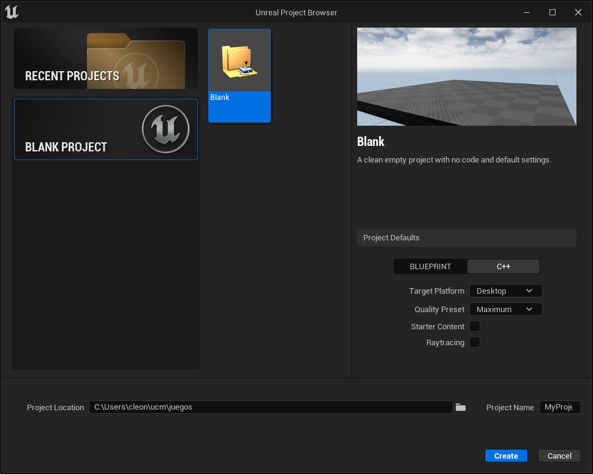
Figura 1: Crear nuevo proyecto básico C++
Ahora estaremos trabajando en paralelo con Visual Studio y Unreal Editor
Es decir, ambas ventanas estarán abiertas, e iremos cambiando de una a otra
Suele ser útil usar cada uno de los entornos para lo que hacen mejor: navegar, modificar y organizar con Unreal Editor, y programar con VS
Pero hay mucha funcionalidad común entre UE, VS (e incluso el explorador de Windows o el cliente de versiones de código)
Desde el punto de vista de un proyecto UE en C++, los recursos imprescindible en un repositorio son:
juego.uprojectConfig/Content/Source/(Puede haber muchos más archivos, pero estos son los que contienen el contenido base)
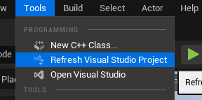
Figura 2: Unreal Engine puede re-crear los archivos de proyecto de Visual Studio a partir de un proyecto bien configurado
La arquitectura interna de Unreal, como ya habéis visto, es muy grande y compleja
Por supuesto, no es necesario conocerla entera para poder hacer un juego en C++ en Unreal
La arquitectura de Unreal usa mucho la herencia, pero está fundamentalmente orientada a componentes
Tools \(\rightarrow\) Class Viewer
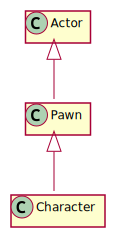
Figura 3: Actors
Igual que en Blueprints, Actor es la base de la jerarquía de los elementos en la escena de Unreal Engine (hay otras jerarquías)
Las clases cuyo nombre empieza por A se refieren a objetos que pueden ser creados en el mundo. Son los actores (Actor)
Las clases que no pueden ser creadas directamente en el mundo y tienen que pertenecer a un actor empiezan por U
Si generamos las clases desde el editor, éste hará una buena parte del trabajo por nosotros y nombrará a los ficheros sin los prefijos
Para declarar una clase C++ para Unreal lo hacemos de forma normal, pero añadimos un par de macros que informan a Unreal de la clase: UCLASS y GENERATED_BODY()
UCLASS UCLASS básicamente le da al objeto C++ una referencia al objeto Unreal
Este objeto tiene datos importantes que Unreal usa para muchas cosas
Entre otras:
UFUNCTION Las funciones en las clases de Unreal pueden ser métodos normales, o pueden ser UFUNCTION
Una UFUNCTION puede ser usada como una función normal, pero además puede ser usada por el editor, por ejemplo en los Blueprints
También pueden ser usadas para ser ejecutadas automáticamente por el motor, o desde la consola mientras se juega
USTRUCT Un USTRUCT es un struct que se "da de alta" en Unreal Engine, haciéndolo visible para serialización, Blueprints, etc
UPROPERTY Si creamos un componente en el constructor y queremos que Unreal se encargue de su gestión, debemos declararlo como atributo y asignarle la macro UPROPERTY
También tenemos UPARAM, UINTERFACE…
Ahora, empecemos a programar con Unreal en C++
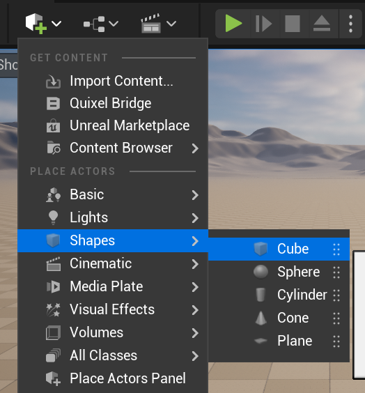
Figura 4: Desde cualquier escena, creemos una malla estática (Static Mesh), por ejemplo un cubo
Details \(\rightarrow\) Add Component
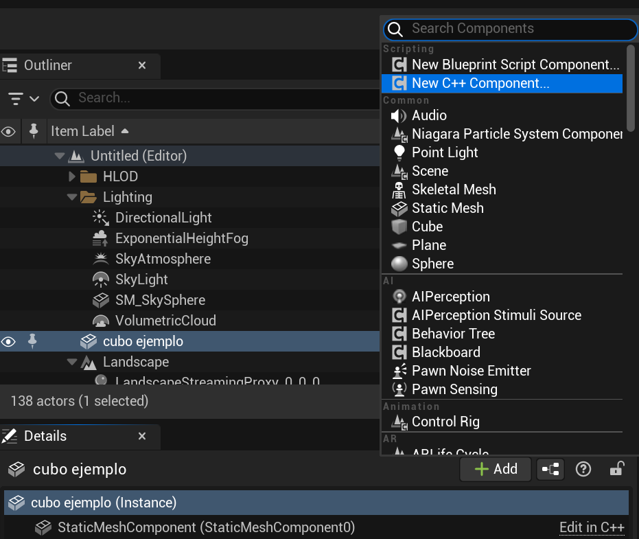
Figura 5: Añadir un componente C++ nuevo, de tipo Actor
Una vez que creamos eso, Unreal crea código y, entre el código de plantilla que crea, inserta la clase que hemos creado
La podemos ver dentro de Source. Vayamos al .h
Podemos ver también que hay unas cuantas directivas de procesador "decorando" nuestra clase
Veremos también que, sea el nombre que sea, ha añadido una U al principio del nombre. Es el convenio de nombres de Unreal
Si vamos al .cpp, es mucho más sencillo, y solo nos da dos métodos (casi) vacíos para rellenar
Si volvemos al .h, veremos que en la parte de arriba nos deja un comentario con la cabecera del código
En Settings \(\rightarrow\) Project settings \(\rightarrow\) Description podemos rellenar los campos para que nos lo genere automáticamente
(No lo hará para archivos ya creados)
En el .h podemos ver que nuestro componente nuevo hereda de UActorComponent
Vemos que hay algunas macros (no prestemos atención a ellas ahora) y la declaración de los métodos
Ya en el .cpp podemos ver en el constructor:
// El código se ejecutará en cada "frame"
PrimaryComponentTick.bCanEverTick = true;
En BeginPlay, se llama al correspondiente método del padre en la cadena de herencia (con Super::BeginPlay())
Nosotros vamos a escribir código en la parte que está comentada con puntos suspensivos:
// ...
Lo primero que vamos a hacer es usar la clase que hemos creado, el componente, para que imprima algo por pantalla, un log
Para esto tenemos la "función":
UE_LOG(LogTemp, Warning, TEXT("Mensaje"));
(No, técnicamente no es una función…)
Por supuesto, podemos buscar la información en Internet
Aviso: la calidad de la documentación del API de UE es irregular
Ahora, en BeginPlay de nuestra nueva clase, creemos un mensaje (debajo de la llamada a Super):
UE_LOG(LogTemp, Warning, TEXT("¡Preparado y listo!"));
LogTemp es el log al que escribiremosWarning imprime un mensaje en amarilloTEXT es una macro que adapta un stringAhora vamos a compilar nuestro proyecto:
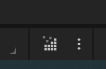
Figura 6: Botón de compilar (abajo a la derecha)
(Mi experiencia es que era más robusto si se hacía desde Unreal, pero según avanzan las versiones todo parece funcionar mejor)
Window \(\rightarrow\) Output LogPlay en UEAunque veamos UE como un entorno integrado, cuando lo ejecutamos realmente estamos arrancando el motor de UE completo
UE nos permite trabajar de forma más clásica, arrancado un IDE (VisualStudio) y compilando y depurando desde él
Veréis que el marcado de errores (el subrayado rojo) puede tardar mucho
De hecho, a veces será incorrecto
Pasará lo mismo con el autocompletado
Esto se debe a que la base de código en enorme, y los analizadores tardan un poco
En algunas ocasiones, Intellisense dará errores, y aún así compilará
En algunos casos, esos errores desaparecerán incluyendo archivos de cabecera (la compilación no los necesita, pero el analizador, sí)
Para depurar (debug) el código escrito en C++ hay que arrancar el editor de UE en modo depuración, desde el IDE (Visual Studio, por ejemplo)
Si queremos poder depurar todo el engine hay que haber instalado los "Editor symbols for debugging" en UE (se puede hacer desde el Epic Launcher)
Ocupan mucho, pero nos permite entrar en el código del motor para ver qué está pasando
Obviamente, esto solo lo haremos cuando sea estrictamente necesario y cuando sepamos lo que estamos haciendo
Para depurar desde VS, vamos a elegir una configuración de lanzamiento, y lanzar desde el IDE
Dependiendo de la configuración que escojamos, tendremos diferentes configuraciones:
Yo suelo arrancar con juego + editor en desarrollo, con eso tengo los símbolos que necesito y puedo editar de forma normal
Para otros IDEs (Clion, VSCode, Xcode), el proceso es similar
Lo único que tenéis que tener en cuenta es saber compilar y lanzar en la configuración apropiada
Una manera de trabajar alternativa a abrir UE a través del Epic Games Launcher es:
Hasta UE5, el proceso de programa en UE con C++ sin reiniciar el juego/editor con cada cambio se hacía con una tecnología llamada hot reload
Ahora (y en las últimas versiones de UE4) usamos live coding, está habilitado por defecto
Cada vez que queramos compilar, usamos Ctrl-Alt-F11
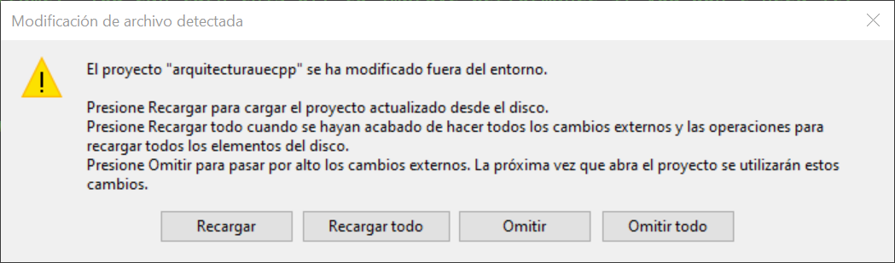
Figura 7: Live coding funciona con casi todos los cambios de código (.cpp/.h), pero si cambiamos la estructura de clases, deberemos reiniciar el editor de UE
También podemos "omitir" y seguir trabajando (pero no recargará, claro)
También podemos arrancar el proyecto sin el editor
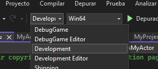
Figura 8: Para eso, arrancamos con la opción Development (sin Editor)
Es posible que nos salga el error de que falta contenido
Es porque no hemos "empaquetado el proyecto"
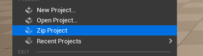
Figura 9: Volvemos al editor y empaquetamos
Ya sabéis cuál es el flujo de trabajo con blueprints
A partir de aquí, vamos a ver cuál es el flujo de trabajo de generación de código con C++
Veremos que la API es muy similar, y que mucho de lo que hacemos con blueprints tiene un aspecto muy parecido en C++
Probemos la reutilización de código
Añadamos el componente que hemos creado a otro Static Mesh
Details \(\rightarrow\) Add \(\rightarrow\) buscar el componente apropiado escribiendo su nombre, y añadirlo
Ahora vamos a acceder a la información de la entidad desde el componente
Volvamos a la implementación del componente que acabamos de crear
En la implementación, el el método BeginPlay, añadamos una llamada a GetOwner()
GetOwner() nos da un puntero al Actor dentro del cual está el componente, y podemos acceder, entonces, a los métodos generales, como GetName() y otros
GetName() nos da el nombre del Actor (tal como lo hayamos creado en el editor) en forma de FString
Recordad acceder siempre a la documentación: FString es una cadena mutable en Unreal
FString name = GetOwner()->GetName();
// o también
auto name = GetOwner()->GetName();
Pero usar un FString en Unreal, dentro de UE_LOG, no es trivial: hace falta insertarlo en la macro, usar caracteres de formato (como en printf) y hacer algo que parece una de-referencia:
FString name = GetOwner()->GetName();
UE_LOG(LogTemp, Warning, TEXT("Preparado y listo, soy %s"), *name);
Hay varios tipos de cadenas en Unreal
FName, ligera, almacenada en tabla, inmutableFText, localización, inmutableFString, mutable, no muy eficiente La macro TEXT() evita que una cadena de caracteres literal (un string puesto entre comillas en el código fuente) esté en ANSI
El asterisco que hemos visto antes, realmente, es una sobrecarga particular del operador en UE
Hace que el FString devuelva su TCHAR interno
Dado que en Unreal se hace un uso tan extensivo de macros, si cometemos un error (fijémonos en name):
FString name = GetOwner()->GetName();
UE_LOG(LogTemp, Warning, TEXT("Hola, soy %s"), name);
Nos dará un error complejo y además informará de líneas de código que ni siquiera son nuestras (limitaciones de las macros en C++)
Además de name, que nos dará el ID, podemos ver el nombre del objecto en el outline (su label, que es una propiedad solo del editor):
FString label = GetOwner()->GetActorLabel();
FString label_y_si_no_hay_name = GetOwner()->GetActorNameOrLabel();
Ahora vamos a añadir información extra sobre el objeto (en el mismo componente):
FString name = GetOwner()->GetActorLabel();
FString position { "(x, y, z)" };
UE_LOG(LogTemp,
Warning,
TEXT("Preparado y listo, soy %s y estoy en %s"),
*name,
*position);
Ahora, reemplazad la cadena position por la posición del objeto que contiene este componente
Recordad que VS completa código, y que el completado es fuzzy (no hace falta escribir la palabra exactamente en orden)
Mirad, desde VS, qué tipo devuelve cada método para saber cómo usarlo
Cuando sepáis un tipo/clase que no sepáis usar, buscad en Google:
ftransform unreal
Recordad también que, una vez que obtengáis la posición, tendréis que convertirla a cadena
Tiene que tener, aproximadamente, este aspecto:
FString name = GetOwner()->GetActorLabel();
FString position = GetOwner()->GetTransform().
GetLocation().ToString();
UE_LOG(LogTemp,
Warning,
TEXT("Preparado y listo, soy %s y estoy en %s"),
*name,
*position);
Ahora vamos a darle un poco más de interés a lo que podemos hacer
Creemos un cubo, y lo modificaremos, a través de un componente, desde C++
Así,
Luego,
BeginPlay, cambiemos la rotaciónFRotator, Se puede usar el constructor que se quiera, pero el más sencillo es el de roll, pitch y yaw
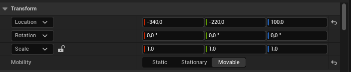
Figura 10: Antes de nada, que no se nos olvide activar la propiedad Movable en el objeto
GetOwner()->SetActorRotation(FRotator(34.0f, 90.0f, 0.0f));
// o también
GetOwner()->SetActorRotation({ 34.0f, 0.0f, 0.0f });
Vamos a crear un Actor en UE, pero con una clase C++ (no con blueprints)
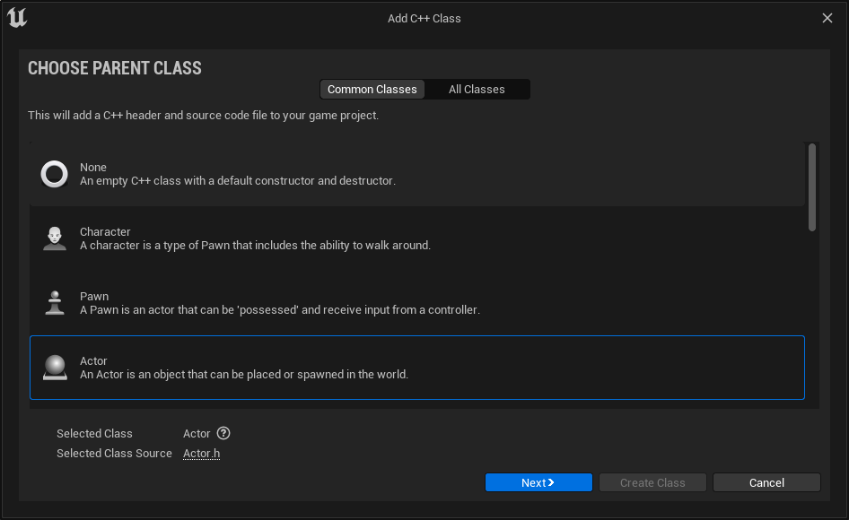
Figura 11: Tools \(\rightarrow\) New C++ class..., y creamos una clase de tipo Actor
Después, arrastramos el nuevo actor desde el Content Browser hasta la escena
¡No ejecutéis el proyecto de momento!
Una vez creada la clase, vamos a crear un componente dentro de ella
En el .h, un atributo (puede ser privado, no importa mucho ahora):
USphereComponent *_esfera;
En el .cpp (en el constructor), tras bCanEverTick:
_esfera = CreateDefaultSubobject<USphereComponent>(TEXT("esfera"));
RootComponent = _esfera; // componente que da posición al actor
_esfera->InitSphereRadius(50.0f);
_esfera->SetCollisionProfileName(TEXT("Pawn"));
(Esto fallará)
Compilamos y falla porque hemos olvidado incluir la cabecera donde está el código:
#include "Components/SphereComponent.h"
Y tiene que estar antes que:
#include "NombreDeMiActor.generated.h"
Sin embargo, aún no vemos nada: hemos creado un objeto esfera sin malla, y no le hemos dado ningún componente malla
Con Starter Content:
UStaticMeshComponent *malla_esfera =
CreateDefaultSubobject<UStaticMeshComponent>(
TEXT("malla_esfera"));
malla_esfera->SetupAttachment(RootComponent);
static ConstructorHelpers::FObjectFinder<UStaticMesh>
SphereVisualAsset(
TEXT("/Game/StarterContent/Shapes/Shape_Sphere"));
malla_esfera->SetStaticMesh(SphereVisualAsset.Object);
También podemos añadir la esfera sin el Starter Content
static ConstructorHelpers::FObjectFinder<UStaticMesh>
SphereVisualAsset(
TEXT("/Engine/BasicShapes/Sphere"));
Ahora podemos añadir al mapa nuestra nueva esfera creada con C++
Todo ha sido gracias a ConstructorHelpers::FObjectFinder:
// `static` hace que solo se cree la variable en la primera
// llamada, con lo que llamar más veces al constructor
// no lanzará una búsqueda de "asset" adicional
static ConstructorHelpers::FObjectFinder<UStaticMesh>
SphereVisualAsset(
TEXT("/Game/StarterContent/Shapes/Shape_Sphere"));
static aquí hace que solo haya una instancia del assets compartida por todos las =Actor=s, así solo se carga la primera vez
Si no se comparte asset, igual no hace falta el static
Fijémonos en que poner el código en el constructor hace que el objeto se instancie correctamente en el editor, no hace falta estar ejecutando el juego para ver la nueva esfera
Si cambiamos el asset referenciado y recompilamos, UE no recargará estos assets que haya en el nivel
Por ejemplo, si cambiamos de esfera a cono, seguiremos viendo una esfera
Será necesario volver a abrir el nivel
Actor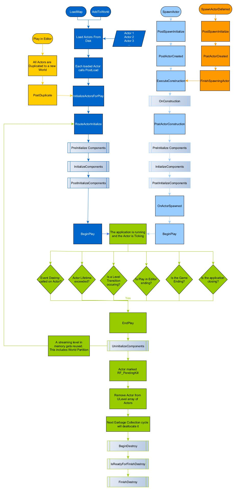
Figura 12: Ciclo de vida de un actor en UE
Hay más métodos de Actor que pueden ser útiles (las llamadas están en orden):
PostLoad/PostActorCreated - Configurar un actor en la construcción (PostLoad es para serializados, PostActorCreated para "spawneados")AActor::OnConstruction - Construcción e inicialización de los blueprintsAActor::PreInitializeComponents - Llamado antes de InitializeComponent en cada uno de los componentes del ActorUActorComponent::InitializeComponent - Inicialización de cada componenteAActor::PostInitializeComponents - Llamado después de la inicialización de los componentesAActor::BeginPlay - Llamado cuando empieza el nivelMuchas veces queremos crear instancias de actores que ya tenemos modelados (como proyectiles)
UE, en su clase mundo, nos ofrece UWorld::SpawnActor
Pongamos esto en el Tick de nuestro actor C++, debajo de la llamado al Tick de Super:
FTransform spawnedTransform = GetTransform();
spawnedTransform.AddToTranslation( FVector{ 100.f, 0.f, 0.f } );
GetWorld()->SpawnActor<AActor>(AActor::StaticClass(),
spawnedTransform);
Ejecutemos el juego, hagamos Eject (F8) y veamos cómo evoluciona la escena
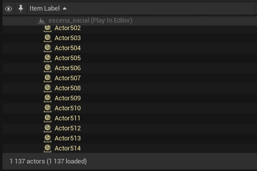
Figura 13: En ejecución podemos ver cómo se crean muchos actores
En nuestro ejemplo podemos destruir, pasado un tiempo, un actor o actores
Para destruir un actor hay que usar:
_actor->Destroy();
Actor guardado en alguna parte En el .cpp (en Tick):
if ((_counterDelete -= DeltaTime) <= 0.0f) {
_counterDelete = CD;
for(auto &a : _spawned) {
a->Destroy();
}
_spawned.Empty();
}
Y en el .h (en efecto, aún no sabemos qué es un TArray):
private:
TArray<AActor*> _spawned;
static constexpr float CD = 5.0f;
float _counterDelete = CD;
Y, para meter en el TArray (ahora veremos más sobre esto):
_spawned.Add(newActor);
El API de Unreal Engine es enorme
Es imposible acordarse de todas las clases y métodos, es necesario trabajar siempre con la documentación a mano
Desde la página web del API de Unreal Engine se puede acceder a toda la documentación
Se puede buscar en la API por nombre de clase en el buscador de la página
Y, para ver la documentación C++, hay que elegir la opcióncorrespondiente
Figura 14: Elegir la información de C++ API